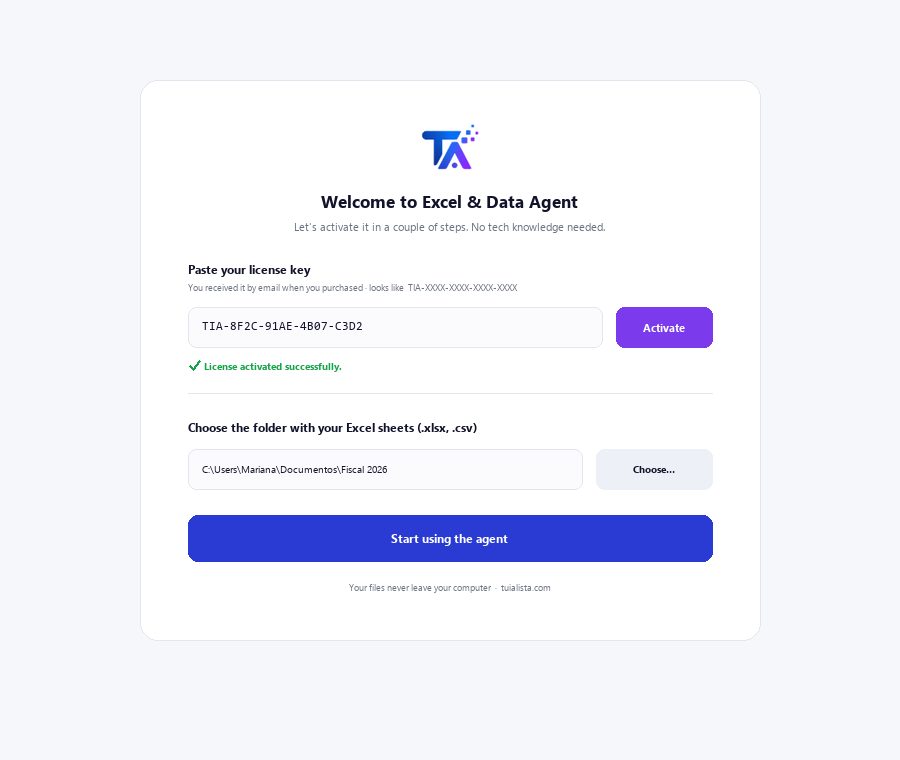
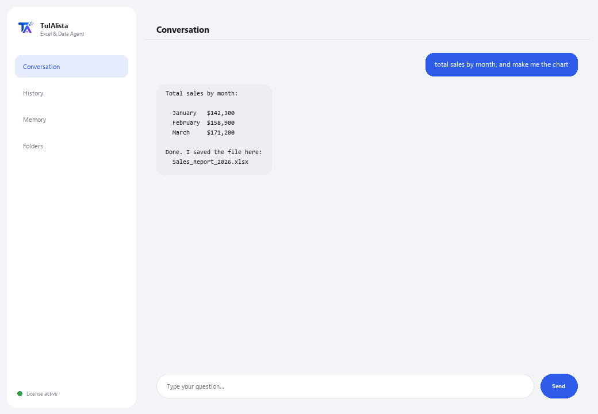

Excel & Data Agent
Ask for whatever you need in your own words and it actually DOES it: totals, lookups, pivot tables, charts and reports — without writing a single formula.
What does it solve and what do you need?
It's not a chat that just comments on your data: it's an analyst that executes the operation for real (in a secure local sandbox, isolated from your system) and hands you the result — a table on screen and the Excel file or chart ready to open.
- You need: your license key (TIA-XXXX-XXXX-XXXX-XXXX) and the folder with your Excel (.xlsx) or CSV sheets. No Python, no formulas.
- First result in under 5 minutes: install, activate, pick your folder, and ask it “total sales by month, and make me the chart”.
- Your data never leaves your computer — only the structure (column names) goes to the AI, never the data, and the most common recipes don't even use AI.
soporte@tuialista.com or visit tuialista.com/soporte — we usually reply the same business day.1 What this agent does
You point it at your sheets and ask anything, in your own words:
- “get the total by region and make me the chart”
- “create a sheet with these columns and link it to the other file”
- “executive report with formatting, a pivot table and an embedded chart”
The agent understands, builds the operation, and actually executes it in a secure local sandbox — it doesn't just describe what it would do. It also:
- Has automatic recipes (fixed, already-tested rules, no AI, never fail) for the most common needs: reconciling 2 files, consolidating, aging accounts receivable, low-stock inventory, pulling data from another table (like a VLOOKUP but without formulas), pivot tables, cash flow, VAT, and more.
- Remembers across questions: you can tell it “add this to the previous file” or “save it in my documents”.
- Can record multi-step routines of yours and repeat them whenever you ask.
- Has a live mode: if you already have the Excel file open, it can read and write cells directly there (with your confirmation before writing anything).
2 Installation (2 minutes)
For Windows. No constant internet connection needed, and nothing gets uploaded to the cloud.
Download the installer from tuialista.com/descargar (Excel agent) and open it. It creates a desktop shortcut with the logo — no Python or terminal needed.
Double-click the new icon. Paste your license key (you received it by email when you bought it) and click Activate. You'll see a green checkmark once it's valid.
Select the folder with your Excel (.xlsx) or CSV sheets and click Start using the agent. Next time it starts right up — it remembers your key and your folder.

3 How to use it
The agent opens a chat window, like a messaging app — not a programmer's black screen. There are no commands to memorize: you ask for what you need the way you'd ask an analyst, hit Send (or Enter), and it gets done:

What it does WITHOUT needing AI (safe mode, on by default)
- Reconcile 2 files / detect what's missing
- Consolidate several files into one · remove duplicates · clean up
- Accounts receivable aging (30/60/90)
- Inventory: below minimum · valuation · dead stock
- Cross-reference and pull data (VLOOKUP) · pivot tables · top-N · totals by X
- Compare prices/versions · cheapest quote · detect anomalies
- Cash flow · budget vs actual · VAT · time-clock hours
Want to see all 20 full recipes with a real example of each? Check the Recipe catalog — a separate document because it's long: catalogo_recetas.pdf next to this manual, or the interactive version at tuialista.com/guia/excel/recetas.
Memory and routines
You can tell it “save this as my weekly report” to repeat an operation later with “run my weekly report”, or “pick up where I left off yesterday” to continue — even in a different session.
Live mode (Excel open)
If you already have the file open in Excel, you can ask it things directly about cells (“what does B2:B40 add up to?”, “put the total in D5”). Reads respond instantly; writes show you a preview first and wait for your “yes” before touching the file.
4 Common use examples
Get a total without formulas
“what was the total sales for March?”
Compare periods or categories
“compare January vs. February sales by region” — it replies with a comparison table.
Reconcile two files
“reconcile the bank file against the accounting file and tell me what's missing” — automatic recipe, no AI.
A complete report
“executive report with formatting, a pivot table and an embedded chart” — it hands you the finished Excel file.
5 Frequently asked questions
Does my data get uploaded to the internet?
What formats does it accept?
Does it really execute the operation, or just describe it?
What happens if I ask for something outside the tested recipes?
Can live mode damage my open Excel file?
What language does it reply in?
Can it read several files at once?
Can I change the data folder?
Does it modify my original files?
What are “routines”?
6 Troubleshooting
It won't load an Excel file
It shows “0 sheets loaded”
It says “Invalid license” or asks to reconnect
It says that task isn't in safe mode
Live mode isn't responding
None of these fixed your problem? Write to us directly — we'll gladly look into it with you.
soporte@tuialista.com or visit tuialista.com/soporte — we usually reply the same business day.7 Privacy and confidentiality
Your data never leaves your computer.
- The automatic recipes (reconcile, consolidate, accounts receivable, inventory, pull data from another table, pivot tables, cash flow...) run 100% locally, no AI.
- For new AI-handled tasks (expert mode), the AI only receives the structure (column names), never your data.
- The only things that travel over the internet are: (1) a check that your license is active, and (2) the structure of your sheets when AI is needed for a new task.